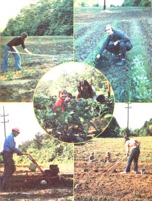

"For lease: 13 acres of prime agricultural land, cleared, with good road access. Asking $7.50 per acre per year." Chances are, you won't see an advertisement like this in your local paper, but-take it from John E. Phillips of Fairfield, Alabama-such bargains do exist. All you have to do is find 'em!
Our family lives on the outskirts of metropolitan Birmingham, Alabama, underneath the smokestacks of U.S. Steel's Fairfield plants. Our back yard consists of fill dirt and a rock garden, and-because of the poor soil quality (and the abundance of shade trees) -the cultivation of food crops on this land is out of the question.
About four years ago, our taxidermy business began to feel the economic crunch and we watched nervously as food prices soared. "This is it," I told Denise (my wife) one day. "We have no choice. We've got to start raising our own vegetables." The only question was where.
Up until the time I was 10, gardening (which for me meant "weed-pulling") was a regular part of life, since my father had always had a backyard garden in the city. But with my own family, I had no place to raise food or to pass on the gardening tradition that had been handed down through my father's family to me. Spurred on by the pressures of inflation, I began to look around for a place to make our "survival garden".
In this search for cultivable land, I quickly discovered that most of the suitable acreage within reasonable driving distance from my home is owned by large corporations ... corporations that prefer to leave the acreage "as is"?or planted in pine forests-rather than lease it out to farmers. Late one afternoon, however-as I was driving down the highway?I noticed that the land underneath the poles that carry the power company's high-tension lines was-for the most part-cleared and needed only to be bush-hogged and denuded of small trees and stumps to be made ready for gardening. Right then, I decided to look into the possibility of growing a garden on "right-of-way" land.
As I investigated this idea, I learned several important (and interesting) facts: [1] During the Great Depression, many power (and other) companies allowed their employees and friends to farm the right-of-ways for free. [2] Even today, a good many firms that own right-of-way land are happy to let people farm their holdings, since the companies then aren't stuck with the burden of clearing trees and brush from beneath their lines. [3] The road access to right-of-way land is nearly always good. [4] Right-of-ways may be fenced parallel to (and-if the fence is made of wood-at right angles to) the powerlines. [5] Although some companies that have right-of-ways use herbicides under their lines (in which case the area is definitely NOT SUITABLE for farming), right-of-way acreage-as a rule-is very fertile and rich in soil nutrients, since -in many cases-the ground has never been cultivated before. [6] One disadvantage of right-of-way land is that it often is not very flat.
Armed with this information, I went straight to the offices of a nearby steel company that owned a right-of-way just five minutes from my front doorstep. I talked for a few minutes with someone in the firm's Land Department and-with no trouble at all-arranged to lease 13 acres of right-of-way (with a good access road in and out and a gate to keep out vandals) for less than $8.00 per acre per year.
With no more gardening experience to draw on than what I had learned as a child, I decided (as all beginning gardeners do) to start big. My plan was to cultivate all 13 acres (with the aid of my brother's tractor) and have a garden that would yield plenty of vegetables for my family as well as my brother's.
In March, we began cutting, clearing, bush-hogging, pulling stumps, and turning and discing the land. By the end of the first day's planting, however, it was apparent that a single 1/2-acre plot was all that our two families could take care of, since Archie (my brother) and I both had full-time jobs to attend to. Even with " only" 1/2 acre under cultivation, though, we raised more cucumbers, tomatoes, onions, turnips, and other vegetables in our spare time than we could eat, can, freeze, sell, or give away!
The next year found us in a dilemma: My brother's family decided to get out of the farming business and buy a small plot next to their home for gardening use ... which meant that Denise and I were left with 13-acres of good farming land and no tractor. Necessity being the father of invention, I ultimately decided to rent a tractor from a neighbor who lives near "my" right-of-way and prepare the 13-acre parcel for planting . . . even though I didn't yet know who was going to plant, maintain, or harvest the area.
As fate would have it, one Sunday in church (right after I'd plowed our vegetable patch) someone mentioned that he was trying (unsuccessfully) to find a place to garden. At that point, I knew I had the answer to my problem. With binder's twine, I marked off a couple of 20' X 50' plots and assigned them to families and individuals who needed a place to raise food. No money exchanged hands: Instead, I asked-and got?one third of what everyone raised. For my "33% commission", I provided the land and the first plowing. The families did their own planting, hoeing, and harvesting.
This "sharecropping" arrangement has proved to be a great success ... not just for me, but for everyone involved. Each year, I get more requests from new gardeners who want to grow crops on my leased land, and every season I see more and more families working together on their gardens. Farming knowledge gets traded back and forth with every chop of the hoe, and everyone always winds up with more food than he/she knows what to do with. (That includes me. Knowing how honest the folks who garden with me are, I'm sure I've always gotten more than a third of their harvests.)
When the price of fertilizer went out of sight a couple years ago (about the time we became avid MOTHER enthusiasts), the Phillips family began to search for alternative ways of fertilizing our garden. At first, we were stymied for lack of ideas, since there were no piles of decaying sawdust or animal refuse close by. But then one morning while I was driving to work I noticed a street sweeper cleaning up the autumn leaves from the roads . and I began to scratch my head.
Without further ado, I went straight to the Fairfield City Hall to find out what happens to all the leaves that are swept up by the city's street cleaners. I learned that the excess leafage is normally carried to a dump and mixed in with other rubbish. Once I explained to the Street Superintendent that the leaf truck had to pass right by my garden to get to the dump-and that the distance to my garden wasn't half as great as the distance to the dump-he was more than happy to see that I got all the leaves I wanted. Ever since then, my compost pile has provided plenty of "soil conditioner" for the good folks who grow food on my 13 acres . . . and has yielded fishing worms for many an enjoyable afternoon on the lake.
Four years ago, we would never have believed it'd be possible for us to have 13 acres of tillable land to use for our own gardening purposes ... but now we know better. Fact is, there's an abundance of good agricultural land (and compost materials) to be had free (or nearly free) for the asking around the edges of many metropolitan areas. All you have to do is open your eyes, see the possibilities, and stake your claim. With a little effort, you too can farm the right-of-ways!
|
 |
|
|